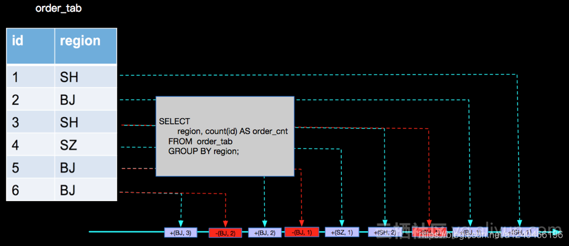

问题引入
1 | --用户中心 |
一个简单的同步,在使用flink sql同步 kafka数据写入hbase时，发现莫名其妙的会删除数据，初始化数据有1000万，同步增量之后慢慢只有不到800万,从hbase后台发现会出现一批DELETE请求，那DELETE请求怎么来的，就得与联系Flink的回撤流了
回撤流
Flink中，Kafka Source是非回撤流，Group By是回撤流。所谓回撤流，就是可以更新历史数据的流，更新历史数据并不是将发往下游的历史数据进行更改，要知道，已经发往下游的消息是追不回来的。更新历史数据的含义是，在得知某个Key（接在Key BY / Group By后的字段）对应数据已经存在的情况下，如果该Key对应的数据再次到来，会生成一条delete消息和一条新的insert消息发往下游。目的就是为了做更新 。
示例
1 | public class RetractDemo { |
1 | (true,(1,1)) |
源码分析
聚合算子回撤
有如下sql：
第一层count，接收kafka source的非回撤流：
1 | SELECT region, count(id) AS order_cnt FROM order_tab GROUP BY region |

第二层count，接收第一层count的回撤流：
1 | SELECT order_cnt, count(region) as region_cnt FROM order_count_view GROUP BY order_cnt |
下面来分析一下其源码：
代码生成
Flink在为SQL语句生成物理执行计划是，会在
AggregateUtil.createGroupAggregateFunction方法中生成聚合方法GeneratedAggregations#retract(),并最终利用Janino动态编译框架编译运行。生成GeneratedAggregations1
2
3
4
5
6
7
8
9
10
11
12
13
14
15object AggregateUtil {
private[flink] def createDataStreamGroupAggregateFunction[K](...generateRetraction: Boolean...){
...
// 动态生成聚合方法
new GroupTableAggProcessFunction[K](
genAggregations.asInstanceOf[GeneratedTableAggregationsFunction],
aggregationStateType,
// 生成聚合函数是否支持retraction，该方法通过判断上游流是否支持回撤来进行返回，true表示支持，false表示不支持
// 例如kafka source算子不支持回撤流，count聚合算子支持回撤流
generateRetraction,
groupings.length,
queryConfig)
...
}
}1
2
3
4
5
6
7
8
9
10
11
12
13
14
15
16
17
18
19
20class GroupAggProcessFunction[K](...private val generateRetraction: Boolean...){
// 代理模式，真正生成的function被GroupTableAggProcessFunction所代理
private var function: GeneratedTableAggregations = _
override def open(config: Configuration) {
LOG.debug(s"Compiling TableAggregateHelper: ${genTableAggregations.name} \n\n " +
s"Code:\n${genTableAggregations.code}")
// 利用janino动态编译框架，动态编译并动态加载聚合函数
val clazz = compile(
// 获取类加载器
getRuntimeContext.getUserCodeClassLoader,
genAggregations.name,
genAggregations.code)
LOG.debug("Instantiating TableAggregateHelper.")
function = clazz.newInstance()
function.open(getRuntimeContext)
...
}
}1
2
3
4
5
6
7
8
9
10
11
12
13
14
15
16
17
18
19// janino的使用
...
import org.codehaus.janino.SimpleCompiler
trait Compiler[T] {
(classOf[CompileException])
def compile(cl: ClassLoader, name: String, code: String): Class[T] = {
require(cl != null, "Classloader must not be null.")
val compiler = new SimpleCompiler()
compiler.setParentClassLoader(cl)
try {
compiler.cook(code)
} catch {
case t: Throwable =>
throw new InvalidProgramException("Table program cannot be compiled. " +
"This is a bug. Please file an issue.", t)
}
compiler.getClassLoader.loadClass(name).asInstanceOf[Class[T]
}
}回撤
聚合算子中包含两种状态，state 存储中间结果状态（如count(id)值）、cntState存储key对应的消息数量（聚合消息+1，回撤消息-1）。state用于不断更新中间聚合状态，cntState用于判断向下游发送当前新的聚合消息，还是上一次聚合消息对应的回撤消息
1
2
3
4
5
6
7
8
9
10
11
12
13
14
15
16
17
18
19
20
21
22
23
24
25
26
27
28
29
30
31
32
33
34
35
36
37
38
39
40
41
42
43
44
45
46
47state class GroupAggProcessFunction[K](...)
extends ProcessFunctionWithCleanupState[K, CRow, CRow](queryConfig){
// 每一条消息都会经过该方法处理
override def processElement(
// 消息的格式是CRow，包含一个change字段，标识是否是聚合消息；true标识聚合消息，false标识回撤消息
inputC: CRow,
ctx: KeyedProcessFunction[K, CRow, CRow]#Context,
out: Collector[CRow]): Unit = {
...
// 中间状态，即上一次的聚合结果
var accumulators = state.value()
// key对应的消息数量，对于不支持回撤流的消息，取值可以>1；对于支持回撤流的消息，取值为0或1
var inputCnt = cntState.value()
// 如果是聚合消息
if (inputC.change) {
inputCnt += 1
// accumulate()是聚合方法，例如count()
function.accumulate(accumulators, input)
function.setAggregationResults(accumulators, newRow.row)
} else {
// 对于支持回撤流的消息，inputCnt取值为0或1，因为某条消息如果要发生变更，只有先撤回，再新增新消息，如图片中的（+ SH 1）,（- SH 1），（+ SH 2）
inputCnt -= 1
// function对象的retract（）方法，只有在判断上游算子支持回撤流时才会生成；在当前场景下为与count()相反的逻辑，即对input中key的count聚合进行减一操作
function.retract(accumulators, input)
function.setAggregationResults(accumulators, newRow.row)
}
...
// 如果该key对应的中间状态还存在，即如果该key还存在，发送最新的聚合消息
if (inputCnt != 0) {
// update the state
state.update(accumulators)
cntState.update(inputCnt)
...
// newRow/prevRow分别代表新消息和对上一次消息的回撤消息，具体请参考源码
out.collect(newRow)
}else{
// 如果该key的聚合消息和回撤消息数量相等，则认为该key即将消失，发送回撤消息
out.collect(prevRow)
// 清除状态
state.clear()
cntState.clear()
}
...
}
}
Sink算子回撤
回顾一下 flink sql的处理流程
流式表查询的处理过程：
流被转换为动态表
对动态表计算连续查询，生成新的动态表
生成的动态表被转换回流
官方对于sink的插入模式有以下三种描述：
- Append 模式 - 该模式用户在定义Sink的DDL时候不定义PK，在Apache Flink内部生成的所有只有INSERT语句；
- Upsert 模式 - 该模式用户在定义Sink的DDL时候可以定义PK，在Apache Flink内部会根据事件打标(retract机制)生成Upsert和DELETE 语句,其中如果定义了PK， UPDATE语句按PK进行更新，如果没有定义PK UPDATE会按整行更新；
- Retract 模式 - 该模式下会产生INSERT和DELETE两种信息，Sink Connector 根据这两种信息构造对应的数据操作指令；
但其实sink算子是否支持回撤流，要根据sink数据源的特性而定。例如kafka sink只支持append模式，jdbc sink在Flink1.11中只支持upsert（不配置primary key会报错）。这都跟sink数据源的特性密切相关
kafka sink
如kafka是利用log中顺序追加消息的方式存储消息，因此只支持append模式，网上有修改kafka sink connector以支持upsert的方法：将聚合算子中的回撤消息（false）过滤掉，只留下聚合消息（true），并写入kafka，带来的现象就是一个聚合结果会多次出现在kafka中，算是一种阉割版的upsert模式，代码如下：
1
2
3
4
5
6
7
8
9
10
11
12
13
14
15
16public abstract class KafkaTableSinkBase implements AppendStreamTableSink<Row> {
// 将 kafka 改成 upsert
public DataStreamSink<?> consumeDataStream(DataStream<Tuple2<Boolean, Row>> dataStream) {
final SinkFunction<Row> kafkaProducer = createKafkaProducer(
topic,
properties,
serializationSchema,
partitioner);
// 过滤掉回撤消息
return dataStream.filter(t -> t.f0).map(t -> t.f1)
.addSink(kafkaProducer)
.setParallelism(dataStream.getParallelism())
.name(TableConnectorUtils.generateRuntimeName(this.getClass(), getFieldNames()));
}
}JDBC Sink
jdbc sink我们以mysql为例，理论上mysql支持append、upsert、retract中的所有模式，但是Flink1.11中只提供了upsert模式。这很好理解，CDC作为Flink1.11的重大特性，append和retract对于CDC都没有意义，只有upsert符合CDC的初衷。
注意：Flink 1.11中ddl中不配置primary key会报错，尽管Flink并不会校验primary key的正确性，而只是upsert模式的一种表征
其原理是利用了mysql的upsert原子语句（必须有主键）来实现，如下：
1
2
3
4
5
6
7
8INSERT INTO `TABLE_SINK_SYNC`(`eno`, `ename`, `esex`, `ebirthday`, `eteam`, `eincome`)
VALUES (1, 2, 3, 4, 5, 6)
ON DUPLICATE KEY UPDATE `eno`=VALUES(`eno`),
`ename`=VALUES(`ename`),
`esex`=VALUES(`esex`),
`ebirthday`=VALUES(`ebirthday`),
`eteam`=VALUES(`eteam`),
`eincome`=VALUES(`eincome`)如果upsert操作不是原子的，很可能会发生并发问题，带来预料不到的后果。
聚合算子回撤 VS Sink算子回撤
- 原理不同
聚合算子通过在state和cntState这两个状态分别维护中间聚合状态和某key所对应的消息数量（聚合消息+1，回撤消息-1），如果cntState.value() = 1，则下发最新的聚合消息；如果cntState.value() = 0，则将state中维护的上一次的聚合状态作为回撤消息进行下发。
Sink算子则是解析canal或debezium中的op字段，如果op=create，则取after字段中的有效数据进行下发；如果op=update，则分别取before和after中的有效数据进行下发；如果op=delete，则取before中的有效数据进行下发。
1
2
3
4
5
6
7
8
9
10
11
12
13
14
15
16
17
18
19
20
21
22
23
24
25
26
27
28
29
30
31
32
33
34public final class DebeziumJsonDeserializationSchema implements DeserializationSchema<RowData> {
public void deserialize(byte[] message, Collector<RowData> out) throws IOException {
GenericRowData row = (GenericRowData) jsonDeserializer.deserialize(message);
GenericRowData payload;
if (schemaInclude) {
payload = (GenericRowData) row.getField(0);
} else {
payload = row;
}
GenericRowData before = (GenericRowData) payload.getField(0);
GenericRowData after = (GenericRowData) payload.getField(1);
String op = payload.getField(2).toString();
// 关键逻辑
if (OP_CREATE.equals(op) || OP_READ.equals(op)) {
after.setRowKind(RowKind.INSERT);
out.collect(after);
} else if (OP_UPDATE.equals(op)) {
before.setRowKind(RowKind.UPDATE_BEFORE);
after.setRowKind(RowKind.UPDATE_AFTER);
out.collect(before);
out.collect(after);
} else if (OP_DELETE.equals(op)) {
before.setRowKind(RowKind.DELETE);
out.collect(before);
} else {
if (!ignoreParseErrors) {
throw new IOException(format(
"Unknown \"op\" value \"%s\". The Debezium JSON message is '%s'", op, new String(message)));
}
}
}
}最后，利用JDBC原子语句
ON DUPLICATE KEY UPDATE实现upsert语义。
数据结构不同
聚合算子中的数据格式为
CRow1
class CRow(var row: Row, var change: Boolean) {}
Sink算子中的数据结构为Row
1
2
3
4
5
6
7
8
9
10
11public final class GenericRowData implements RowData {
private final Object[] fields;
// Flink1.11新增的属性
private RowKind kind;
}
public enum RowKind {
INSERT("+I", (byte) 0),
UPDATE_BEFORE("-U", (byte) 1),
UPDATE_AFTER("+U", (byte) 2),
DELETE("-D", (byte) 3);
}
结论
聚合算子和Sink算子关于回撤的概念相似，但原理不同且使用场景也不同，聚合算子的回撤用于聚合状态的更新，Sink算子的回撤则更多的是应用于CDC场景。
聚合算子的撤回机制，保证了FlinkSQL持续查询/增量查询的正确语义；而Sink算子的回撤机制，保证了CDC场景下的正确语义。
在回到头看我们引入的问题，实际上就是flink sql写入hbase时 转成了 回撤流 所以一个写入请求 被拆成了 DELETE和PUT请求，并且由于两个时间戳一致，hbase正是通过时间戳来判断写入顺序的，就导致先PUT之后又删除的情况,而实际上 HBase本身是由rowkey保证幂等的无需回撤，所以只要过滤掉DELETE请求即可，可通过参数 ignoreDelete'='true搞定。

...
...
This is copyright.